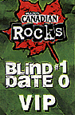
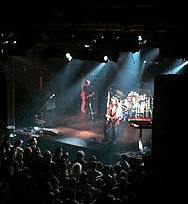

|
December 18, 1996 Club Phoenix. Toronto, ONT
 The Toronto Star December 19, 1996
Old favorites give fans the classic Rush
Well, the long-awaited Rush concert, rumored to be held in December, actually did take place here last night. Now, before you Rush fans develop heart failure, please be aware the show did not take place at Maple Leaf Gardens or SkyDome's skybowl, two venues the band could certainly fill. Instead, the trio appeared at the 900-capacity Phoenix Concert Theatre, an odd choice for a band that has probably been Canada's most consistently popular and successful rock export of the last 20-plus years. Yet, this wasn't just another Rush show. Rather, it was the 10th installment of the Molson Canadian Rocks Blind Date Tour, a cross-country marketing campaign bringing hundreds of lucky contest winners into relatively intimate contact with bands that typically play in cavernous hockey arenas or baseball stadiums. So far this year, Toronto winners have been in the company of such acts as Metallica and The Sex Pistols. But what kind of "blind date" can it be when so many in the crowd seem to know who's going to appear? One of the oddest moments of Rush's performance last night was the general lack of enthusiasm and excitement from the crowd when the Toronto band first stepped onstage. Where was the surprise, the thrill? "Oh, everyone here knew it was going to be Rush," said one non-plussed patron after the band had finished its second song, the appropriately titled "Big Money." Oh, really? Aren't these Blind Date shows supposed to be more top-secret than federal budgets? "I think it was just a lucky guess on the part of some people," said one Molson spokesperson, when advised of the highly accurate gossip going on well before the show. Whatever. If the audience wasn't particularly aroused during the first few songs, a more spirited feeling evolved over the course of the evening. Credit the band for this turnaround. Often hit and miss in concert, Rush was, for the most part, in fine form for much of the night. Guitarist Alex Lifeson, drummer Neil Peart and singer/bassist/keyboardist Geddy Lee offered tight, note-perfect deliveries of such songs as "Subdivisions," "Roll The Bones" and "Nobody's Hero," transferring their big, stadium sound surprisingly well to the club venue. Little wonder, since The Phoenix was stacked with more speakers and hi-tech soundboards than are traditionally seen at this club. Similarly strong was the lighting, which was bright and frequently dramatic. The band put it all to good use on many of the songs showcased from the new album, Test For Echo, including "Driven," "Half The World" and "Virtuality." As expected, while the crowd provided a polite enough response for the new material, it was older, classic Rush tunes that generated the biggest and brightest spark of the evening. Nine songs into the concert, the trio offered a terrific take on "Closer To The Heart." From there, the show truly took off.
The Toronto Sun December 20, 1996
Intimate venue is a real Rush What a Rush! That would be bassist-keyboardist-vocalist Geddy Lee, guitarist Alex Lifeson and drummer Neil Peart. The trio of musical virtuosos who make up the veteran Canadian band Rush gave 800 people at the Pheonix on Wednesday night a scaled-down but powerful sneak preview of their current road show that's expected to pull into the Gardens in the spring. The group has been touring the U.S. since October, where they have sold 500,000 copies of their latest album, Test for Echo. (It's almost reached platinum status in Canada). "Hello Canadians!" welcomed Lee after the band whipped through Dreamline and The Big Money. "It's lovely to see you here. How are you doing? It's nice to be in such intimate surroundings for a change. I can see each and every one of you." Rush normally trot out the large video screen and laser light show to enhance their extremely loud but dynamic prog-rock sound in a stadium setting. But Wednesday night's event was another "blind date" show, in which contest winners arrive to see "a big band at a small venue" supposedly without knowing whom they are going to see. Previous groups in Toronto have included Metallica and the Sex Pistols, but Molson Canadian's final promotion of the year is different in that the same 50 people are travelling across the country to see three shows in a row. It began Monday night in St. John's, Nfld., with Sheryl Crow, and wraps up Dec. 29 in Vancouver. For their part, Rush often seemed more excited than the crowd to be performing in such a small space, decorating the stage with a life-size cutout of soon-to-be-ex Baywatch babe Pamela Anderson Lee. "This is kind of fun," said the sunglasses-wearing Lee, who jumped around like a kangaroo all night long. "Getting sweaty up here and all that stuff". The black leather pants-clad Lifeson, meanwhile, played the clown, striking rock star poses, making goofy faces and occasionally meeting Lee at the front of the stage to play side-by-side. The usually serious Peart cracked a smile at one point, but otherwise remained hunched over his enormous kit, wowing the audience every time he threw a drum stick high up into the air and caught it. The band's 19-song set included five new songs from Test for Echo, most notably their latest hit, Half The World. But the crowd seemed more interested in Rush classics Closer To The Heart, Subdivisions, The Spirit Of Radio and Tom Sawyer. (Hey, even I had a few high school flashbacks during Lee's high-pitched vocals.) This is a group who perform the musical equivalent of finishing each other's sentences with finesse. They appear to have never been fresher.
JamMusic Web Site December 19, 1996

Rush makes a fine blind date in Toronto
No fog machines. No video screens. No fireworks screams. No laser beams. No floppy-eared bouncing Presto bunnies either. Tonight's Blind Date show at the Phoenix Concert Theatre in Toronto was a Rush fan's testimonial. Stripped of all the appealing high-tech sensory theatrics that are the band's calling cards, what lingered were three guys on a stage playing their guts out and enjoying every minute of it. Like slapping a CD on your player and slipping the headphones on,the distractions disappeared. The music and emotion coming in loud and clear. "We're gonna play a whole bunch of absurd music for you tonight," said bass player Geddy Lee in his best English accent. And he wasn't joshin'. The 19-song set was a diverse sampling of Rush's 20 album magical mystery tour which pleased the loyal devotee as well as the enthusiastic newcomer. Tacking a surfin' safari jam onto Big Money was a small hint of the carefree levity in store. Currently on a North American tour (to promote their new disk Test For Echo), the dates are crammed with large stadium shows. Rush, which hasn't played an intimate venue since they dumped that church basement gig approximately 27 years ago, were basking in the atmosphere. Lead guitar god and clown school graduate, Alex Lifeson, was zanier than ever, making faces at Lee behind his back, kidding with the fans and striking your typical "I am a guitar God" poses throughout the show. Lee dabbled in foreign accents and dueled Lifeson. Hell, even Neil Peart whose masterful concentration while bashing the skins couldn't be diverted even if a squad of giggling cheerleaders pranced across the stage, cracked a fleeting smile. Will miracles never cease? The hometown boys even sprung for a cardboard cutout of Pamela Anderson Lee holding a plastic cup (for spare change?). Hint. Hint. Nudge. Nudge. Wink. Wink. The air drums were out in full force during Red barchetta, Animate and Subdivisions but were packed up as the audience loudly gabbed during the slower tunes Nobody's Hero and Virtuality. Roll The Bones, The Spirit Of Radio, Closer To The Heart and Tom Sawyer had the crowd singing along. The trio onstage tonight wasn't the Rush of 1996, or even 1986 for that matter. They were once again the wild-eyed young 'un's prowling the club circuit pocketing just enough dough to buy that new amplifier. Stealing a swig from the fountain of youth, Lee was hitting those high notes again. Peart taught those drums a lesson or two but spared them the renowned solo. Lifeson strummed those strings as if the group was still opening for The New York Dolls. It has been said that Rush is closer to the end of their career than the beginning. Flush the Geritol and toss the Depends. They won't be needing them quite yet, thank you very much. In Lakeside Park the grass is still green. Rating: FIVE OUT OF FIVE
|